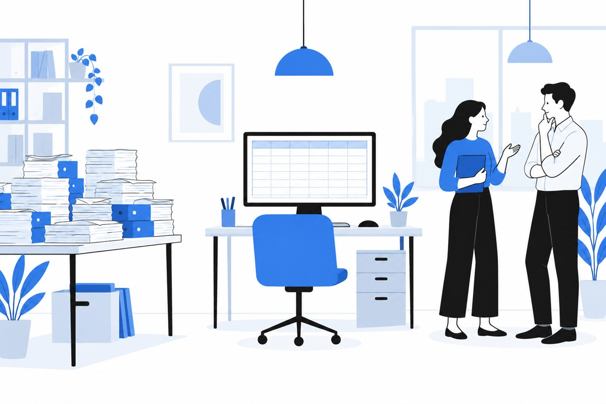
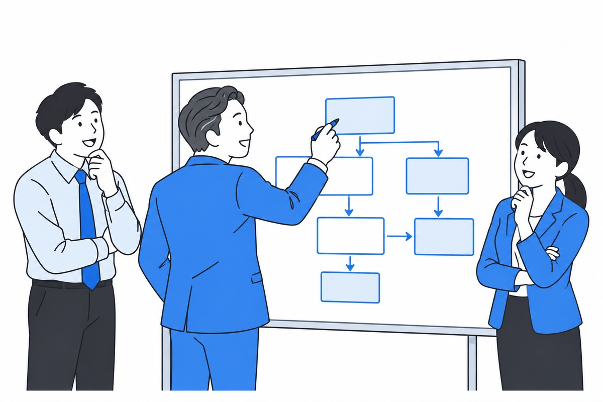
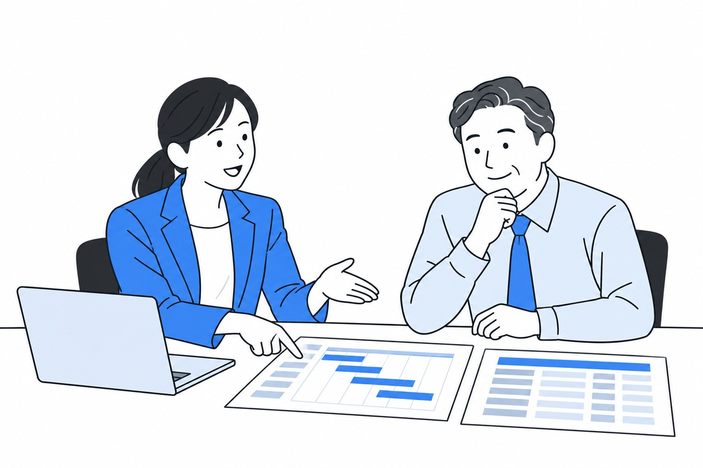
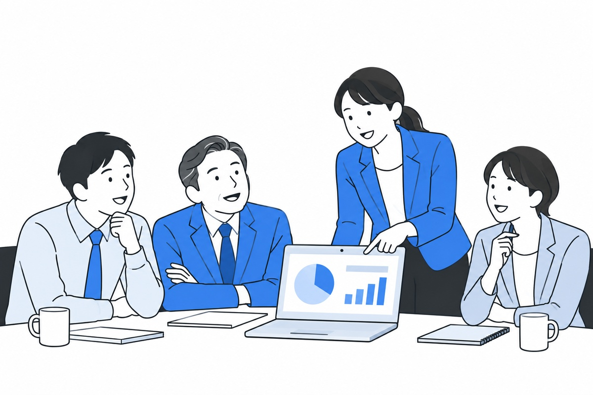
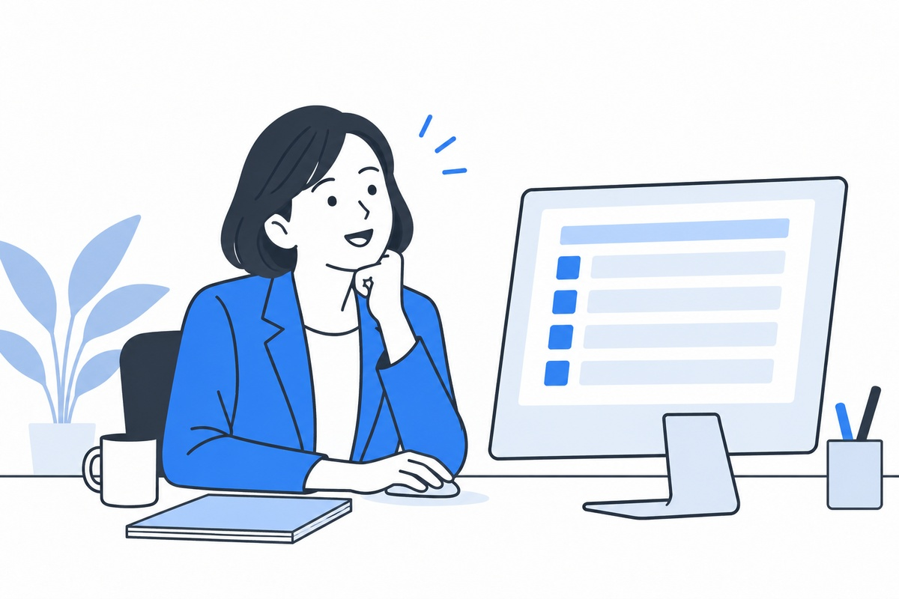
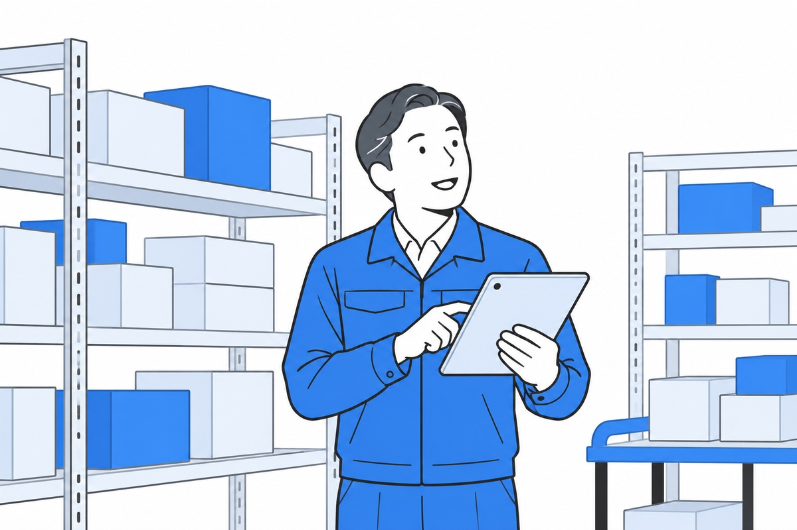

人の力を、
AIで引き出す。
AIは、人を減らすための道具じゃない。
一人ひとりが本来の仕事に集中できるように。
人と人の“つながり”を、取り戻すために。
中小企業のための AI 導入パートナー — KOBE, JAPAN
研修やツール導入で終わらせない。御社の現場に合わせてAIを設計し、使い続けられる状態まで“共に”伴走する。それがAI Linqsです。
LINEで無料相談私たちの想い
私たちがご提案するのは、業務の効率化だけではありません。
AIに任せられることはAIに任せ、人は、人にしかできない仕事に力を注ぐ。
働きがいが高まり、生産性が上がり、会社の成長につながっていく。
それが、AI Linqs の考える「人とAIのハイブリッド経営」です。
AIは、人を減らすための道具じゃない。
一人ひとりが本来の仕事に集中できるように。
人と人の“つながり”を、取り戻すために。
外注先ではなく、伴走者として。
御社の現場に入り込み、課題を一緒に解く。
経営者の隣で、共に勝ちにいくパートナーへ。
人とAIのハイブリッド経営を、
日本の新しいスタンダードに。
その一歩を、神戸から、御社から。
判断や承認が経営者に集中し、売上が伸びるほど業務が詰まる。気づけば現場が止まる原因が自分になっている。
採用しても管理工数が減らず、教育の費用ばかり増える。人手は増えたのに利益改善につながらない。

情報がバラバラで、特定の人がいないと業務が止まる。引き継ぎも属人化し、ノウハウが残らない。
人手不足が進むこれからの時代、AIは「人を減らす道具」ではなく、
「人の力を引き出す相棒」になります。早く始めた会社ほど、
現場に合った使い方が育ちます。まずは、できるところから。
選ばれる理由
同じ「AI支援」でも、私たちが大切にしているのはこの3つです。
01
AIの導入は「何をされるか分からない」のが
不安のもと。まず無料でお話を伺い、
必要なことを整理し、進め方と
費用対効果のお見積もりをお出しします。
ご納得いただいてから、
ご契約です。
02
紙や口頭、Excel が中心でも大丈夫です。
「うちはまだ紙がメインで」という
会社こそ、伸びしろがあります。
今のやり方を否定せず、
現場に合わせて
設計します。
03
資料を渡して終わりにしません。
2週間に1回お伺いし、
いまの課題をお聞きして、
解決策を一緒に見つけます。
御社に合わせたオーダーメイドの仕組みを、
一緒につくります。
費用はかかりません。まずは現状とお悩みをお聞かせください。準備は要りません。「何から始めればいいか分からない」という段階で大丈夫です。業務の流れや困りごとを、経営者の言葉のままお話しいただきます。

お聞きした内容をもとに、どの業務から手を付けると効果が大きいかを整理します。今のやり方を否定せず、現場の実情に合わせて、無理のない優先順位を一緒に決めていきます。

必要な機能と範囲を要件として書き出し、何を、どの順番で、どのくらいの期間で進めるのかを、工程表としてお見せします。あわせて、減らせる工数と費用を並べたお見積もりをお出しし、投資に見合うかをご判断いただきます。
内容と費用にご納得いただいてから、ご契約となります。無理な売り込みはいたしません。ご契約後は 2週間に1回お伺いし、定着するまで隣で伴走します。
まずはAI研修から。必要に応じて、業務の自動化や仕組み化まで広げられます。

社内にAIを定着させる
3ヶ月の伴走研修。経営者の
言葉に合わせて進めます。

反復業務や確認・管理業務を
AIが担い、担当者依存と
管理負荷を解消。

現場固有のフローを、
そのまま使える仕組みに。
紙・Excel運用を置き換えます。
運送
確認の手間が大きく減り、
人を増やさずに業務が回る体制になりました。
自動車関連
シフト作成も自動化し、
作業時間を大幅に削減
オフィス
資料作成や数値分析、定期作業を自動化し、
社内でAIを使いこなす力が向上。
LINE にご登録いただくと、次の 3 つをご利用いただけます。登録は無料、配信はいつでも止められます。
経営に役立つ AI の使い方を、
定期的にお届けします。
「これは AI でできる？」を、
LINE でそのまま聞けます。
社労士・税理士など、士業の実務に
特化した AI を体験いただけます。